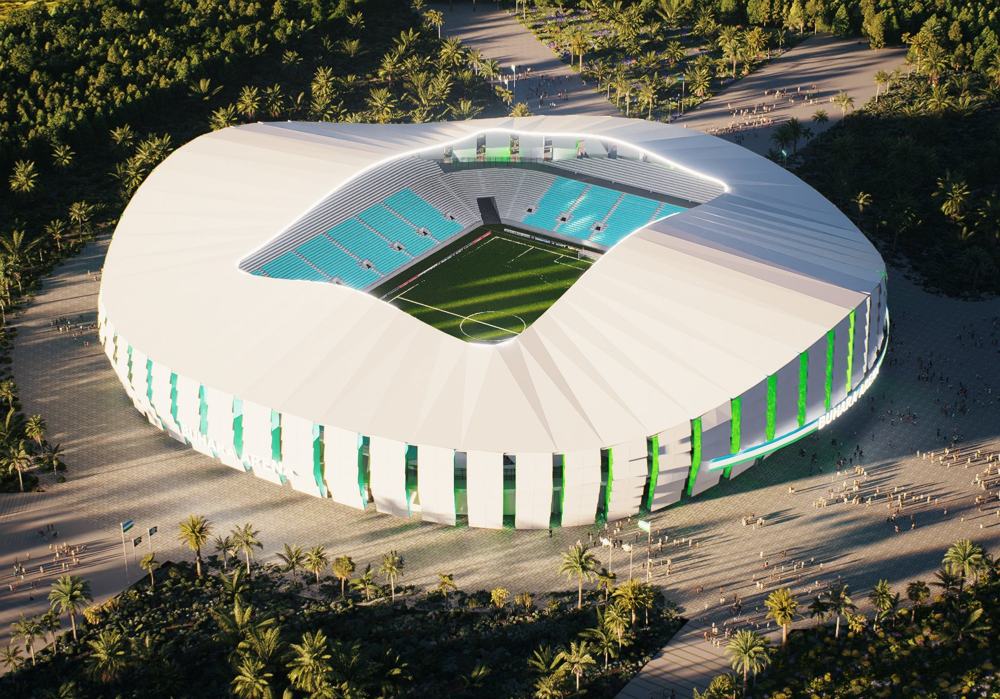
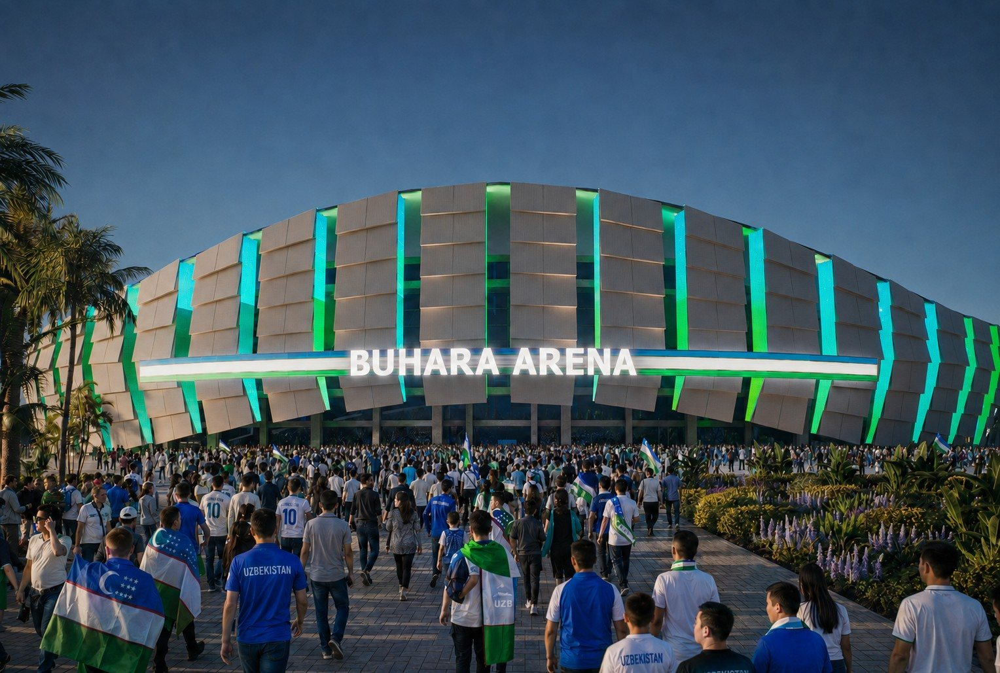
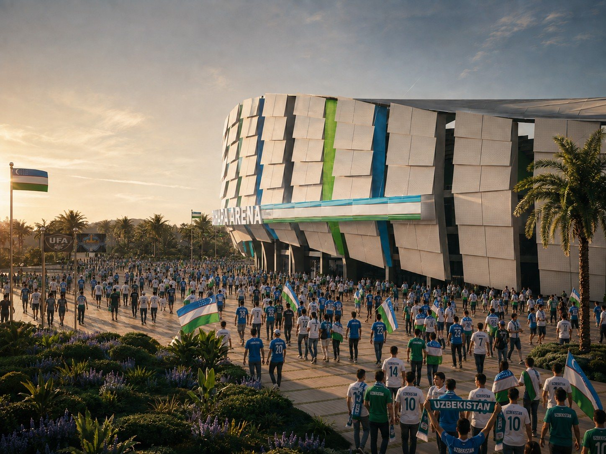
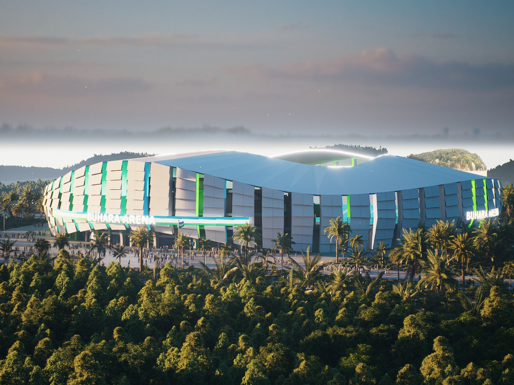
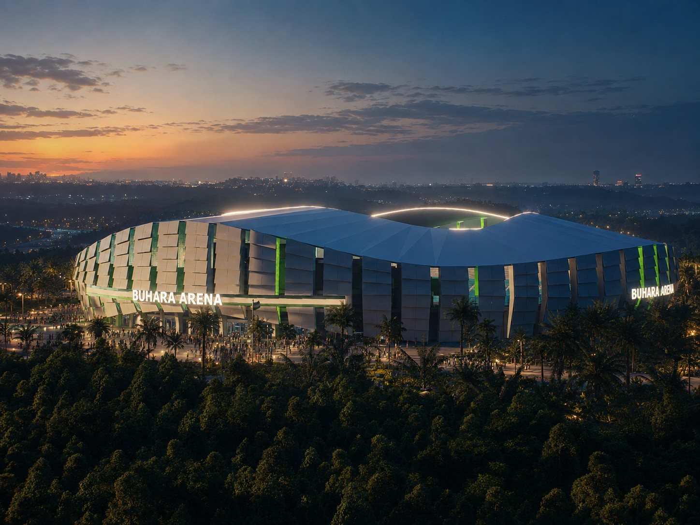
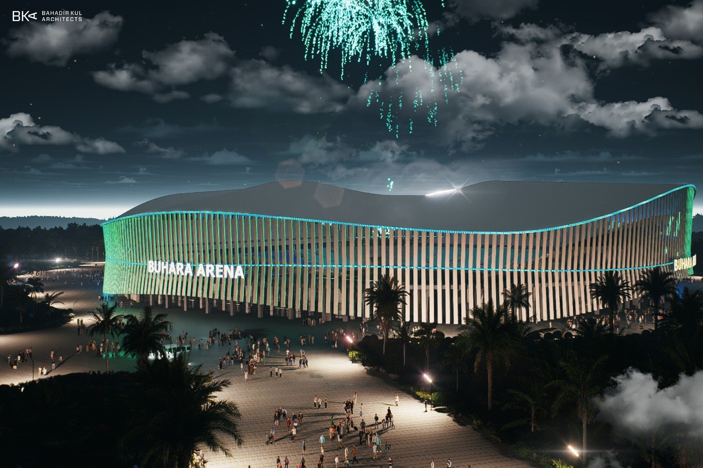

BUHARA ARENA by BKA3D MODEL / VISUALIZATION

BUHARA ARENA
by BKA — 3D MODEL & VISUALIZATION: MEHMET ÜNAL
BUHARA
ARENA
by BKA.
STADIUM / BAHADIR KUL ARCHITECTS
A football stadium for Bukhara wrapped in a rhythmic façade of white vertical blades, with lit bands in the colours of the Uzbek flag and a roof that rises and dips like a dune.
The visualization set follows the arena through the day — morning approach through the forest, golden-hour crowds on the plaza, and the façade glowing at dusk and on a fireworks night.

AERIAL / BOWL AND ROOF01

MAIN ENTRANCE / BLUE HOUR02

MATCH DAY / PLAZA03

FAÇADE / MORNING04

DUSK / CITY EDGE05

NIGHT / FIREWORKS06
CREDITS.
PROJECTBuhara Arena
ARCHITECTBahadır Kul Architects (BKA)
3D MODELMehmet Ünal / StudioQuix
VISUALIZATIONMehmet Ünal / StudioQuix
NOTEArchitectural design belongs to BKA